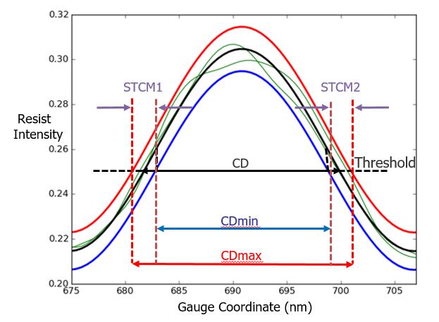

The Stochastic Compact
Model (STCM) is a resist model calibration enhancement model that can
be used to account for shot noise in EUV optical sources. (While
stochastic models can be used with DUV optical sources, current
data results indicate that the stochastic effects for DUV are negligible.)
Stochastic effects are the unpredictability factor
in EUV modeling due to shot noise. A standard process window model
does not always correctly predict failures in some low contrast
critical dimension situations, because it finds a single curve solution.
A stochastic model is designed to use a variability band to take
confidence intervals into account, and thusly predicts a more accurate
range of possible edge locations and critical dimensions for the
optical model.

In other words, a stochastic model finds two additional thresholds
such that CDmin <
CD < CDmax with
a 99.9% percent confidence level.
Key concepts for stochastic modeling include the following:
LER and LWR —
Line Edge Roughness and Line Width Roughness. These are the variability
factor for measurements over gauges for 1D features.
LCDU —
Local Critical Dimension Uniformity. This is the variability factor
for 2D features.
Stochastic band —
The range between high and low values for critical dimensions.